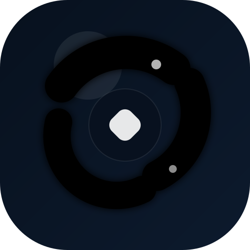

Interactive OKLCH guide loading.
The redesigned Visualise OKLCH site lives in /docs. This page immediately forwards there so your
project URL stops showing the plain GitHub README view.

The redesigned Visualise OKLCH site lives in /docs. This page immediately forwards there so your
project URL stops showing the plain GitHub README view.